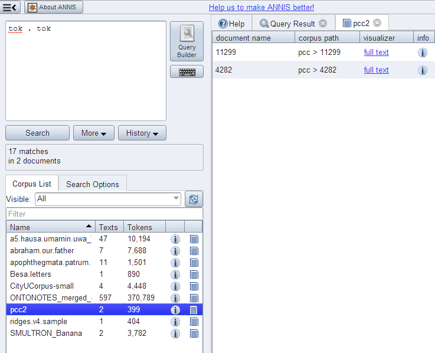

Document Browser
It is possible to view a list of documents for each corpus and visualize documents independently of any queries posed by the user. To open the document browser for a corpus, click on the document icon in the corpus list next to each corpus. By default, a list as shown below is generated with a link to a plain text representation of each document.

Custom visualizer and sorting
It is also possible to use a custom visualizer for browsing a whole
document. The configuration is in JSON-Syntax file named
document_browser.json, which can be add to the ExtData directory of
each corpus.
{
"visualizers": [
{
"type": "htmldoc",
"displayName": "diplomatic text",
"mappings": "config:dipl"
},
{
"type": "rstdoc",
"displayName": "rhetorical structure"
}
],
"metaDataColumns": [
{
"namespace": "annis",
"name": "title"
},
{
"namespace": "annis",
"name": "genre"
}
],
"orderBy": [
{
"namespace": "annis",
"name": "title",
"ascending": "false"
}
]
}
Explanation in detail:
- visualizers - type: Defines which document visualizers are available for a corpus. All visualizer from the list above with the suffix "doc" in their name are suitable for using as doc visualizer.
- metaDataColumns (optional): For every defined metadata field an additional column is generated in the corpus browser table with the metadata key as a column header and the metadata value as the table cell value. This is useful for viewing, and sorting by, different metadata available to the documents. The line “namespace” can be left out if the namespace is null.
- orderBy (optional): In the default state the table is sorted by document name. Alternatively it is possible to define a custom sort by the metadata fields, even if the column is not visible. "namespace" and "ascending" are optional (if namespace is not specified, null is assumed). "ascending" is "true" by default.